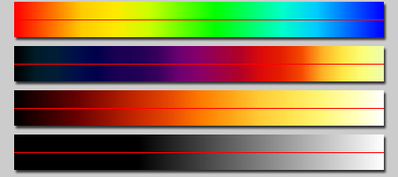
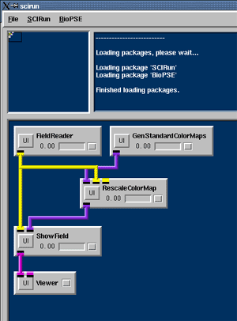
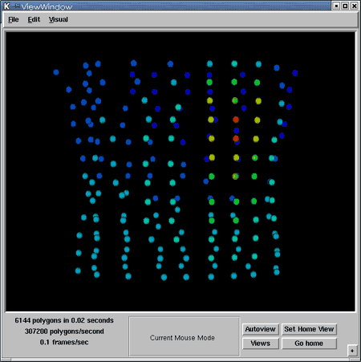
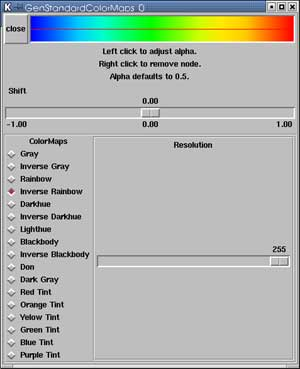
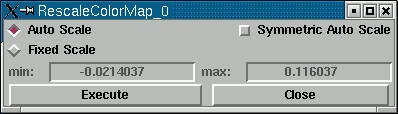
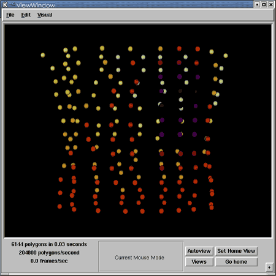
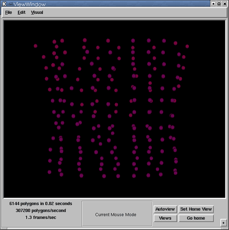

|
Chapter Overview Chapter 1 demonstrates the construction of a small network to visualize the geometry of a mesh. This chapter demonstrates how to extend that net, adding tools to look at data values on the geometry. Specifically, how to visualize a scalar quantity (voltage) on a set of points in space (a PointCloud of electrodes). In the previous net, three modules were hooked together--FieldReader, ShowField, and Viewer. In the user interface of the ShowField module, the Default Color selector was used to render all geometry in blue. In this chapter, rather than mapping a single color to the geometry, colors will vary across the mesh based on the data's scalar values. First, map the data value at each node of the mesh to a meaningful color in order to differentiate one data value from another. The Color Map module in SCIRun provides this mapping. A ColorMap contains a set of spaced colors that evenly change, red, green, blue, alpha (RGBA), mapped to a data value range, as specified by the minimum and maximum data value. Figure 2.0 shows several example color maps. 
The GenStandardColorMaps module generates color maps in SCIRun. This module contains a selection of default color maps. For each color map, the user controls the opacity for each data value, then chooses the number of discrete entries in the color map table. The ColorMap determines which values in the data are assigned to each color. By default, the minimum/maximum range is from -1 to 1. Using the RescaleColorMap module, you can set the min/max values by hand, or, you can auto-scale them to correspond with the min/max data value range from a scalar field. Now, add a GenStandardColorMaps and a RescaleColorMap module to the net created in Chapter 1.
The network should look like Figure 2.1. 
The RescaleColorMap, such as the ShowField module in Chapter 1, is another example of a module with dynamic input ports. If the user connects more than one field into RescaleColorMap, the min/max range for auto-scaling corresponds to the min/max range of data values from all input Fields. The second input port on the ShowField module accepts a ColorMap that maps the data values in its input Field to a color in the input ColorMap, and renders accordingly. If a ColorMap is present in ShowField the module ignores the Default Color, and uses the ColorMap value. To complete this net, read in a Field. 
Now, explore the UIs for the GenStandardColorMaps and RescaleColorMaps modules. Upon pressing the UI button on the GenStandardColorMaps module, the window shown in Figure 2.3 will appear. 
Please note the following:
Figure 2.4 shows the UI for the RescaleColorMap module. 
In GenStandardColorMaps, change the color map from Inverse Rainbow to Inverse Darkhue. This changes the image in the ViewWindow from Figure 2.5 to Figure 2.6. 
Change the ColorMap range in the RescaleColorMap UI to a Fixed Scale of -30 to 30 in order to "clamp" the range of colors as in Figure 2.6. 
Summary Chapter two demonstrated how to add tools for looking at
data values and for varying colors over the geometry, rather
than mapping a single color. The next chapter features more visualization techniques, and
explores how
to input and output a Field.
|